Input formatParameter definitions
LEASt square fit of .....(up to 80 char)
nstep nit nvar ncond
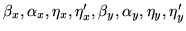
name pkeyw del for i = 1 to nvar
nval valf weight for j = 1 to ncond
nasp
repeat the following nasp times
name npas
name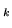 pkeyw coef for k = 1 to npas
nstep
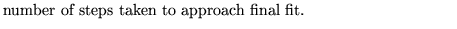
nit
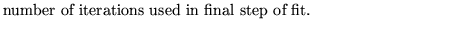
nvar
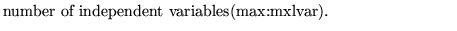
ncond

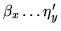
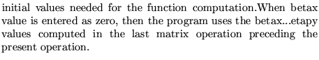
name
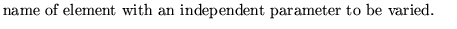
pkeyw
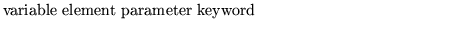
del
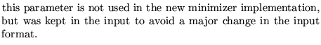
nval:
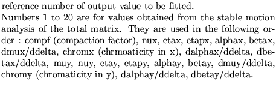
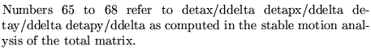
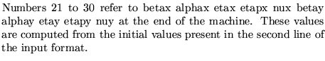
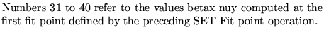
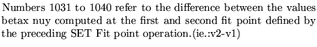
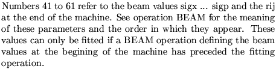
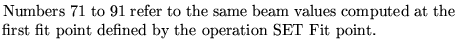
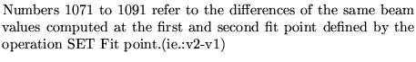
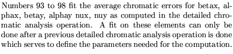
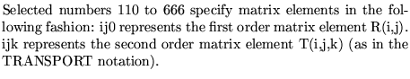
valf
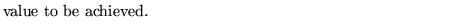
weight
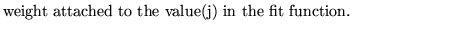
nasp

name
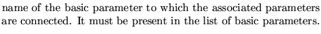
npas
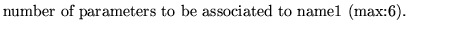
name
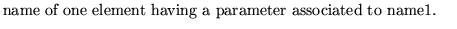
pkeyw
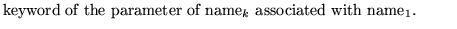
coef
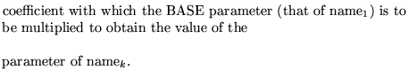
Examples
The first two examples come from demo1. The second example is given to illustrate the use of associated parameters. Refer to demo1 for the meaning of the element names.
The third example comes from demo4. It illustrates the use of associated parameters and shows how beam matrix elements can be fitted.
least square FIT OF QUADRUPOLE STRENGTH FOR A 90 DEGREE CELL. 1 1 2 2 * since this a cell fit the twiss values are irrelevant but * values must be put in (beta =/ 0) 1.0 0 0 0 1.0 0 0 0 QFONE K1 .001 QD1 K1 .001 2 .25 1.0 12 .25 1.0 0; least square FIT OF QUADRUPOLE STRENGTH FOR A 90 DEGREE CELL. 1 1 2 2 1.0 0 0 0 1.0 0 0 0 QFONE K1 .001 QD1 K1 .001 2 .25 1.0 12 .25 1.0 1 QFONE 1 QFTWO K1 1.0, LEAST SQUARE FIT FOR COMPENSATION OF SOLENOIDAL FIELD 1 2 8 12 0.53 0 0 0 0.04 0 0 0 Q1 K1 .001 Q2D K1 .001 Q3D K1 .001 QSKEW1 K1 .001 QSKEW2 K1 .001 QSKEW3 K1 .001 KQ5E ANGLE .001 EFSA L .0001 21 8.975 1 22 1.3341 1 26 20.709 1 27 1.2077 1 130 0 1 140 0 1 230 0 1 240 0 1 310 0 1 320 0 1 410 0 1 420 0 1 2 EFSA 3 E41X L -1 E42E L 1 FSB L -1 KQ5E 1 KQ4X ANGLE -1,